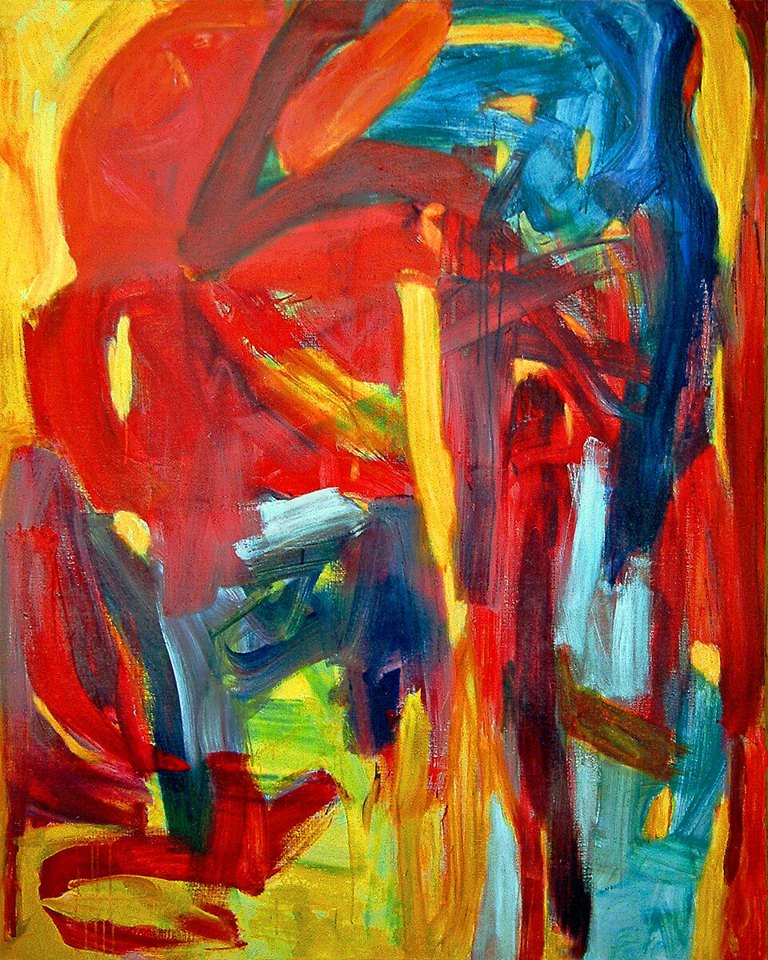

Pixel playground ·
Can you rebuild this microstructure?

A checkerboard, a set of stripes and a random arrangement can contain the same colors. But do they need the same number of principal components? Let us create the patterns and find out.
In my earlier image-generation tutorial, I showed how to build simulated images. Here I extend that idea with colored pixels and a reconstruction game. If PCA is new to you, start with SVD with a small picture and PCA with small pixel images.
Make a pattern
I use violet, indigo, blue, green, yellow, orange, red and white. Choose the settings, then select “Generate pattern.” With fewer than eight colors, I keep white and use the first colors in the list. The checkerboard uses two of the available colors.
Preparing the pattern…
Guess the smallest number of components
First choose what “reconstruct” means. Guess the minimum, then check it. The mean row is retained even when you keep zero components.
Orange in the last panel marks an incorrect pixel color; pale gray marks a correct one. The blended display combines reconstructed weights with the palette and limits displayed RGB values to 0–255. The numerical error is calculated before this display adjustment.
What is PCA looking at here?
I treat each image row as one observation. Each pixel column contributes one feature for every available color. This is called one-hot encoding: with three colors, the labels become [1, 0, 0], [0, 1, 0] and [0, 0, 1]. It avoids treating violet, green and red as ordered numerical values. Changing their displayed shades does not change this calculation.
For a 16 × 16 image and eight available colors, the data table has 16 rows and 128 feature columns. I subtract the mean of each feature across the 16 rows, calculate the principal directions and reconstruct the data using the first few directions. I then add the mean row back.
This differs from the earlier PCA tutorial, where each complete image was an observation. Here the experiment examines how image rows vary within one pattern. Rotating the image changes that row representation. The component count is therefore not a complete measure of microstructural complexity.
Two different reconstruction targets
Exact numerical reconstruction: the reconstructed one-hot entries must match the original entries within rounding. For the game, I require RMSE below 10⁻⁸. RMSE means root-mean-square error, averaged over all one-hot entries. It is dimensionless.
Recover every pixel color: I choose the color with the largest reconstructed weight at each pixel. This can recover all labels even while the weights differ from 0 and 1. The weights are not probabilities and can lie outside that interval. When weights tie exactly, the first color in the palette is selected.
The answers use the component directions calculated in this game. If principal variances tie, more than one set of intermediate directions is valid. A different valid basis can change the smallest count that recovers all labels. Numerical reconstruction error does not increase as components are added; pixel-color accuracy need not improve at every step.
Try these challenges
- Generate vertical stripes. Guess the numerical reconstruction count, then rotate the pattern. Why does the answer change?
- Choose a checkerboard. Change the block width and compare it with random pixels.
- Generate clusters. Can every pixel color be recovered before the numerical data are recovered exactly?
- Try a uniform pattern. What should zero components produce?
- Increase the random grid size. Does the answer depend only on the number of colors?
Worked explanations
Vertical stripes have identical rows. Their mean row already contains the complete pattern, so no components are needed. Rotation gives rows with different colors, which introduces variation. A two-color checkerboard has a single independent centered row pattern and needs one component when both row types occur. A uniform pattern also needs zero components.
Clusters and random arrangements generally have more independent row patterns. A centered table with N rows has rank at most N − 1, so the game never needs more than that many components for numerical reconstruction. This is a bound from the data arrangement, not a rule that all random images require the maximum.
Patterns, not simulated phase evolution
These are synthetic pixel patterns. Clustered patches are made by assigning pixels to nearby seed points; stripes and checkerboards follow simple geometric rules. The colors identify labels. They do not specify compositions, real phases or physical units of length. This playground does not evolve a thermodynamic model.
The mean row is stored separately. A small component count alone does not prove a small file size, nor does it establish the number of physical mechanisms in a material.
Numerical checks against NumPy: 252 cases, including rotations.
Build the calculation in small steps
Download the step-by-step notebook or the Python script. Install the dependencies with python -m pip install numpy matplotlib, then run python microstructure-pca.py. The browser calculation source is also available. To repeat the numerical comparison, save check-reference.py and check-browser.mjs alongside these source files. Run python check-reference.py, then node check-browser.mjs. The first command creates a reference file; the second writes the comparison report. The notebook uses NumPy SVD; the browser calculates the equivalent row-space PCA with a small symmetric eigensolver. Tied variances can give different valid intermediate pictures.
1: I choose the display colors. White is included for every palette size.
Each integer in the image is a color label, not a composition or brightness. I use VIBGYOR plus white. The palette affects the display, but does not affect the one-hot PCA calculation. Rows and columns count pixels; there is no physical length calibration.
PALETTE = ['#8b5cf6', '#4f46e5', '#3b82f6', '#22c55e',
'#facc15', '#fb923c', '#ef4444', '#ffffff']2: I generate reproducible random numbers with the same rule as the browser.
The seed determines the random-number sequence. The same size, color count, pattern, patch width and seed give the same labels in Python and the browser. Clustered patterns assign each pixel the color of its nearest seed point. These are invented geometrical patterns, not phase-field simulation results. Patch width is measured in pixels. In a checkerboard it sets block width; in stripes it sets band width. For random and uniform patterns it has no effect.
def random_numbers(seed):
state = int(seed) & 0xffffffff
while True:
state = (1664525 * state + 1013904223) & 0xffffffff
yield state / 4294967296
def make_pattern(size, colors, kind, width, seed):
random = random_numbers(seed)
labels = np.zeros((size, size), dtype=int)
offset = int(next(random) * colors)
centers = []
if kind == 'clustered':
count = max(colors, int(np.floor(size * size / (width * width) + 0.5)))
for i in range(count):
centers.append((next(random) * size, next(random) * size, i % colors))
for row in range(size):
for column in range(size):
label = offset
if kind == 'random':
label = int(next(random) * colors)
elif kind == 'horizontal':
label = (row // width + offset) % colors
elif kind == 'vertical':
label = (column // width + offset) % colors
elif kind == 'diagonal':
label = ((row + column) // width + offset) % colors
elif kind == 'checkerboard':
label = 0 if (row // width + column // width) % 2 == 0 else colors - 1
elif kind == 'clustered':
nearest = float('inf')
for center_row, center_column, color in centers:
distance = (row - center_row)**2 + (column - center_column)**2
if distance < nearest:
nearest = distance
label = color
labels[row, column] = label
return labels3: I encode each color as a separate feature, then center the image rows.
One-hot encoding uses one entry per color. For example, with three colors, color 0 is [1, 0, 0] and color 2 is [0, 0, 1]. np.eye creates this table. Indexing it with labels gives an array of shape (size, size, colors). reshape puts each image row into one data row, keeping the color entries of each column together. At size 16 and eight colors, X has shape (16, 128). The mean is calculated down rows, separately for each feature.
def encode_rows(labels, colors):
size = labels.shape[0]
return np.eye(colors)[labels].reshape(size, size * colors)4: I use NumPy SVD to calculate the principal directions of the centered rows.
The data observations here are image rows, not a collection of complete images. Centering subtracts the mean row. Vt contains the principal directions as rows; scores tells me how much each observation uses each direction. @ is matrix multiplication; :count keeps the first count entries or directions. I add the mean back when reconstructing. Zero components therefore gives the mean row repeated down the image. The centered rank cannot exceed size minus one. RMSE is calculated over all one-hot entries, with no physical units.
def analyze_pattern(labels, colors):
X = encode_rows(labels, colors)
mean_row = X.mean(axis=0)
centered = X - mean_row
U, strengths, Vt = np.linalg.svd(centered, full_matrices=False)
scores = centered @ Vt.T
total_variation = np.sum(strengths**2)
states = []
size = len(labels)
for count in range(size):
rebuilt = mean_row + scores[:, :count] @ Vt[:count]
weights = rebuilt.reshape(size, size, colors)
recovered = weights.argmax(axis=2)
rmse = np.sqrt(np.mean((X - rebuilt)**2))
correct = int(np.sum(recovered == labels))
fraction = None if total_variation < 1e-12 else np.sum(strengths[:count]**2) / total_variation
states.append({'count': count, 'rmse': float(rmse), 'correct': correct,
'fraction': fraction, 'labels': recovered, 'weights': weights})
return {'labels': labels, 'states': states,
'exact': next(s['count'] for s in states if s['rmse'] < 1e-8),
'phase': next(s['count'] for s in states if s['correct'] == size * size)}5: I choose a case, inspect the error and compare the original and reconstruction.
The largest reconstructed weight chooses the displayed color. argmax selects the first color when weights tie exactly. These weights are not probabilities: some can be negative or greater than one. Recovering every color label does not require every weight to be exactly 0 or 1. The browser uses a Jacobi eigensolver and this notebook uses NumPy SVD. When principal variances tie, valid intermediate component directions can differ, as can the smallest count that recovers every label. Numerical rank and reconstruction error agree within rounding. The browser game refers to its own calculated directions.
def run_example():
size = 16
colors = 8
kind = 'clustered'
width = 3
seed = 42
labels = make_pattern(size, colors, kind, width, seed)
result = analyze_pattern(labels, colors)
for state in result['states']:
print(f"Components: {state['count']:2d}, RMSE: {state['rmse']:.6f}, "
f"correct colors: {state['correct']}/{size * size}")
print('Minimum for numerical reconstruction:', result['exact'])
print('Minimum for pixel colors with this NumPy basis:', result['phase'])
retained = 4
colormap = ListedColormap(PALETTE[:colors - 1] + [PALETTE[-1]])
fig, axes = plt.subplots(1, 2, figsize=(8, 4))
axes[0].imshow(labels, cmap=colormap, vmin=0, vmax=colors - 1, interpolation='nearest')
axes[1].imshow(result['states'][retained]['labels'], cmap=colormap,
vmin=0, vmax=colors - 1, interpolation='nearest')
axes[0].set_title('Original pattern')
axes[1].set_title(f'{retained}-component reconstruction')
for ax in axes:
ax.set_xlabel('Column index')
ax.set_ylabel('Row index')
plt.tight_layout()
plt.show()
return result6: I check known cases and numerical recovery before changing the example.
I compare each new RMSE with the preceding one and check full numerical recovery. Vertical stripes have identical rows, so the saved mean row already reproduces them. A two-color checkerboard has one independent centered row pattern. These are checks of this representation. They do not establish that a real microstructure has only one physical mechanism.
def check_examples():
for kind in ['uniform', 'vertical', 'horizontal', 'checkerboard', 'diagonal', 'clustered', 'random']:
result = analyze_pattern(make_pattern(12, 8, kind, 2, 42), 8)
errors = [state['rmse'] for state in result['states']]
assert errors[-1] < 1e-8
assert all(b <= a + 1e-12 for a, b in zip(errors, errors[1:]))
if kind in ['uniform', 'vertical']:
assert result['exact'] == 0
if kind == 'checkerboard':
assert result['exact'] == 1
print('All pattern checks passed.')
if __name__ == '__main__':
run_example()
check_examples()